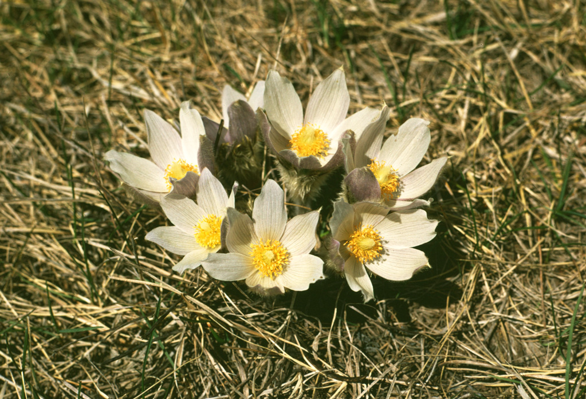
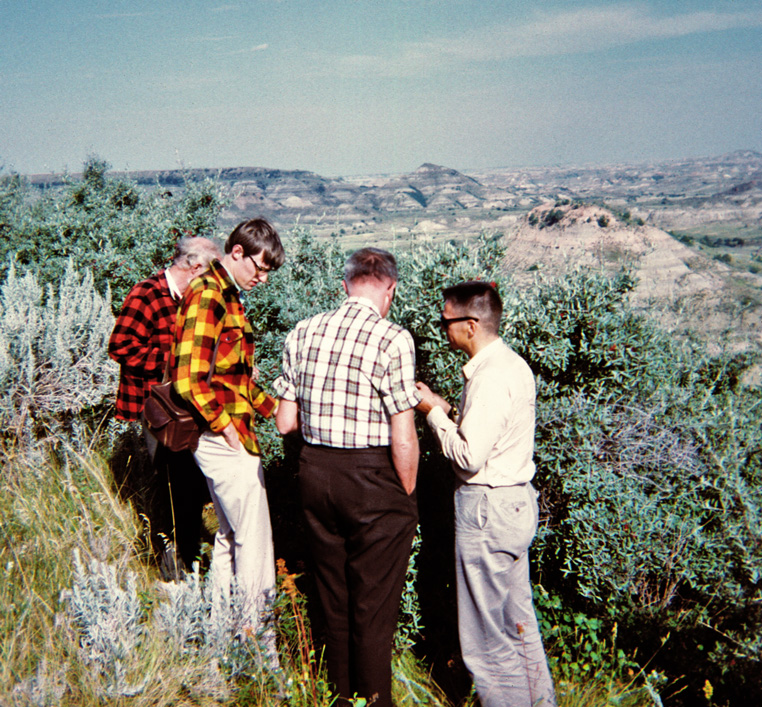

Adventures in Minnesota 1970: From Myrtle Lake to Mantrap Lake
Hilary Birks
Together with John Birks, I spent a post-doctoral year at the LRC with Herb Wright. It was one of the most enjoyable years of my life. My primary aim was to study the modern distribution of seeds and fruits within lakes in order to facilitate the interpretation of fossil data. So I set to and learned macrofossil analysis using the excellent reference collection amassed by Bob Bright, Bill Watts, and others.
We arrived in January 1970 at -17F (-22C) and were shocked as we got off the plane and our noses froze. The next morning, we set off for Pillsbury Hall. It was a beautiful sunny day. But we were completely fooled by the temperature and the wind chill. A few yards beyond the motel, we turned back and found a lot more warm clothes! Bill had advised us not to go in September as the winter is very long and cold. It was good advice. However, before I could do any fieldwork on my project, I had to wait until summer. Herb had an EPA grant to study the pollution of Sallie Lake near Detroit Lakes City and I became part of this project. So Herb, Mark Mantovani, and I set off in Herb’s field-car, the ‘yellow peril’ to obtain a short core from St Clair Lake upstream in the same catchment, which received direct inflow from the city. It is a shallow lake and acts as a filter before the water reaches Sallie Lake. It was cold fine weather, but with a significant wind chill. We reached the lake, unloaded, and took a short core of the sediments from the middle of the lake from the ice. Herb looked round at me and said quietly, “Your nose has turned white. Rub it”. Likewise, my ears experienced frostnip. They have been sensitive to cold winds ever since. For some reason, probably due to the lack of a functioning gas gauge, we ran out of gas several times. In the end, the car was running on snowmobile fuel, which I don’t suppose did it much good - but it was probably insensitive to such things at its age.
I had never been so cold before. But worse was to come. Roel Janssen had been analysing surface pollen samples within the Red Lake Peatland, which included Myrtle Lake, in northeast Minnesota. He wanted Herb to get a core from the lake for him so that he could make a regional pollen diagram and use his surface samples to interpret it in terms of past vegetation. Herb pressganged John and I to go coring with him together with Rex Wright and Bud Heinselman. Myrtle Lake is surrounded by Picea mariana peatland forest. At the start of the trail to the lake, we all confidently set off with a snow-mobile, one snow-shoe (!), basic food, tent, coring equipment, etc. The air-temperature was +37F (2.5C) and the snow was wet and slushy and very hard to walk through. We set up camp on a duck-hunters wooden platform. Unfortunately, the edge of the tent did not quite reach the ground but we managed. Bud had seen the weather forecast and knew a cold front was approaching straight from the Arctic. Indeed, we could feel it getting colder. Bud got us all collecting as much wood as possible while it was still light to keep a good fire going. After a chilly supper, we tried to sleep. Herb had kindly given me his Antarctic sleeping bag, but I was still frozen. I made the big mistake of leaving my boots outside the sleeping bag and had a minor drama during the night when I had to get out. As the temperature plunged to -340F (-370C), we all tried to sleep. But my teeth kept involuntarily chattering and helped to keep everyone awake. All except Herb, who snored quietly in his corner of the tent. In the morning his beard was sealed with icicles, so he was quieter than normal.
| Herb with his frozen beard | Frozen breakfast |
Breakfast was minimal, as everything was frozen solid; bananas like bricks, grapefruit like cannonballs. We managed to thaw out some cereal bars over the fire. We had come to core, so we gathered up the equipment and set off on to the lake-ice. John lent Herb his red jumper as he was ill-equipped. Out of the shelter of the forest, the wind was bitterly cold. We managed to make a hole in the ice and put the corer down. No problem, until we pulled it up again. The water on it froze instantly, making the rods hard to hold and disconnect, and the square rod impossible to turn. Disheartened, we returned to shore. Herb had the idea that we could core through the peat forest. But the ground was frozen and impossible to penetrate. Herb’s next idea was to core through the fire. Good thinking; the fire would have melted the frozen ground. But this did not work either, because naturally the ground was full of tree roots. And the smoke from the fire left us coughing and spluttering.
By this time, it was late in the day, so retreat was inevitable. It should be easier to walk out on the now frozen snow. However, the snowmobile would not start; it had frozen along with everything else. Ever resourceful, Bud raised it on some coring rods and lit a small fire under the engine. This did the trick, and we were away. We reached the road where the yellow peril was parked. Needless to say, it was frozen solid too and would not start. We were preparing to light a fire under its engine, when fortunately a local man drove past. He kindly drove off and returned with some jump leads that allowed us to start the car. We were eternally grateful, as were not looking forward to another night of camping.
On the way back to the Twin Cities, Bud, always the source of good ideas, suggested we might stop in Ely and get an evening meal - we had hardly eaten for the last 28 hours. As we entered a rundown cafe bar, a drunken Minnesotan looked at this dishevelled bunch of people with beards, long hair, and dirty clothes and hurled his beer at us and shouted “bloody Californian hippies!” We finally got back to St Paul early next morning without any core at all. Herb later admitted that this was a new experience for him to return without a core. The name ‘Janssen’ was barely mentioned for a few weeks as we thought of him sitting in his warm office while we nearly froze to death in our attempts to get him some Myrtle Lake mud! I doubt we would have even survived without Bud and his woodsmanship.
John’s task in Minnesota was to investigate the floral and vegetational development on recently deglaciated land during the late-glacial period. After perusal of the maps and Herb’s great knowledge of the glacial terrain, he chose a site called Wolf Creek, an infilled inter-drumlin palaeolake. Herb drove us and Bob Bailey in the yellow peril, and it was cool (on the feet) to see the snowy road through the floor of the car. Herb had not brought the coring frame, so we erected a tripod of coring rods tied together with yellow rope. This eventually became a bipod as we needed the rod! Herb used his large-diameter square rod piston sampler, and we extruded each section by pushing against the tyre of the car. Mission successful!
John wanted a second site, so Herb suggested Kylen Lake in the Toimi drumlin field which should have old sediments. By now, winter was coming to an end, so we three hurried out to Kylen Lake. Getting on to the lake ice was easy. Coring went moderately well, and we retrieved a good core. But it had taken longer than expected, and darkness fell before we were quite finished. Finally we trudged back to the shore, only to find that a moat had melted during the day. We did not fancy spending the night on Kylen Lake waiting for it to freeze again, so we got rather wet reaching dry land with ungainly splashing leaps and a toboggan ‘bridge’.
Spring suddenly arrived in April, the snow melted, and flowers opened. We tried to follow the development of spring northwards, after a good start on Alice Prairie and Kasota Prairie, with millions of stunning pasque flowers. The progression of spring was very rapid, but by driving further and further north each weekend, we did manage to see the forest floor carpeted with Trillium grandiflorum and other beautiful plants. We made several more plant hunts during the summer, especially with Ed.
Kasota Prairie |
 Anemone patens |
Mamillaria vivipara - do not kneel on this! |
 Studying Shepherdia argentea in N Dakota; Herb, John, Roel, Ed |
Epigaea repens |
Lilium michiganens |
Cypripedium calceolus |
Uvularia grandiflora |
As spring turned to summer, it was time to start taking surface mud samples from lakes in the three main biomes present in Minnesota; prairie, deciduous forest, and coniferous-deciduous forest (boreal forest). I had considered investigating the lakes’ flora using SCUBA diving, and qualified on a course in a local swimming pool. I made one dive in Lake Itasca accompanied by Mel Whiteside. It was fantastic to see graceful forests of giant Ceratophyllum demersum. However, my plan to dive to my sites was scuppered, because one needed a diving buddy, and John could not even swim. My approach was to describe the flora and vegetation of the lakes and their marginal swamps, and then to take surface mud samples in transects from shallow to deep water in the different vegetation zones with an Eckman dredge. I described the aquatic vegetation from five grab samples taken around my boat and visual assessment where possible.
At most of the 32 lakes I sampled I was accompanied by John. When Roel Janssen visited, we sampled some lakes, including an attempt at Lake Sylvia to get surface samples for Roel. We had to cross a large Typha marsh with willow bushes to reach the open water. We gradually sank below boot height. Roel thought that if we used a toboggan to distribute our weight, we might get there. We got further, but then the toboggan sank, us with it, and we had to give up.

To sample the lakes in NE Minnesota in the coniferous forest, we spent a pleasant time with Bob and Ann Carlson in their cabin and paddled around the beautiful lakes in their canoe. We found Xyris montana, a dainty yellow sisyrinchium flower, beside one lake, which was new to the flora of Minnesota. It has since been discovered in several localities.
I made one sampling expedition on my own to central Minnesota. After sampling a couple of lakes, I arrived at Mantrap Lake. There was a large floating sedge-swamp around the shore, which I struggled over using the boat to stop me sinking. Out on the lake, I was about to start sampling, when the floor of Herb’s inflatable yellow dinghy (called a dingy by Roel Janssen) started to come away from the rim, letting water in. I paddled as fast as possible to the nearest shore, which happened to be covered in a bramble patch, and decided that the lake was well named. Herb’s dinghy was the sort used for playing on beaches. It had no rowlocks and was quite hard to paddle. Ed Cushing said that I should have trashed it ages ago! So I was glad when I could purchase a larger, more sturdy (still yellow) dinghy with rowlocks. I believe Bill and Herb used it later in Florida. I found a lot of mollusc shells in my samples so I got help identifying these from Bob Bright down in the Museum. I never published all the data from the project, including the molluscs, but synthesized the main points in a paper in 1973. Perhaps that bottom drawer should be investigated once more and the mollies resurrected.
The pollution project at Detroit Lakes needed two more sites; the target problem lake, Sallie Lake, and a ‘control’ unpolluted lake. For the latter, we chose Elk Lake which Donna Stark had been studying previously with diatoms. We needed a lot of material at fine resolution for a multi-proxy study using pollen, macrofossils, diatoms, and cladocera. So Herb devised a 20cm diameter plastic tube corer of 1m length. It was operated by Mel Whiteside diving, placing the core tube, and when it was pulled up, capping the bottom so that the sediment would not fall out. It worked splendidly and we obtained samples from both Sallie and Elk Lakes. Later, I went to Elk Lake by myself to record the vegetation. On the way out along a muddy track, my car got stuck and I was lucky to be able to reverse and just make it out over the mud.
We met many wonderful people in Minneapolis. Don Lawrence allowed us to be guests on his student field trips so we saw some interesting places and vegetation. He invited us to Thanksgiving lunch at his cabin. It was a convivial occasion with lots of roast turkey and pumpkin pie. Ed and Caroline Cushing had also invited us to dinner that evening - more roast turkey and pumpkin pie! We were quite naive about Thanksgiving dinners, so we had to eat far too much delicious food that day. Many other folk were also extremely generous and hospitable to us.
We were sad to leave Minneapolis, the LRC, and Herb and Rhea in December (before winter got too bad). Besides all the stimulating science during our year at the LRC, we also made many good friends. Rhea wrote me many of her characteristic type-written letters after we got home, and we were glad to welcome her to Cambridge on two visits. Herb also visited us on several occasions in Cambridge and Bergen. But I have never been back to Minneapolis.